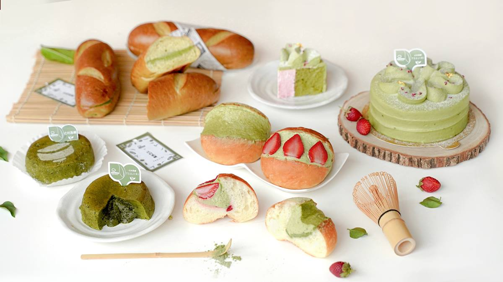
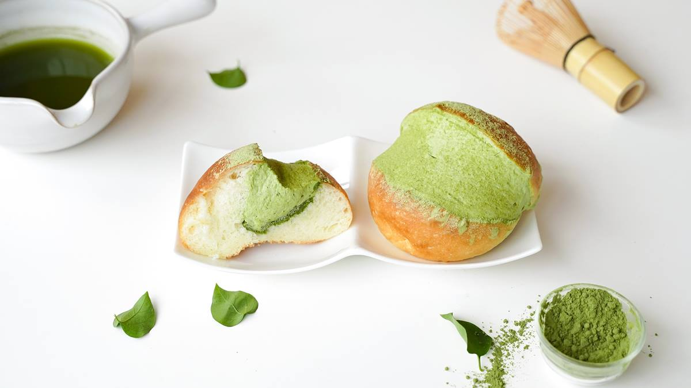
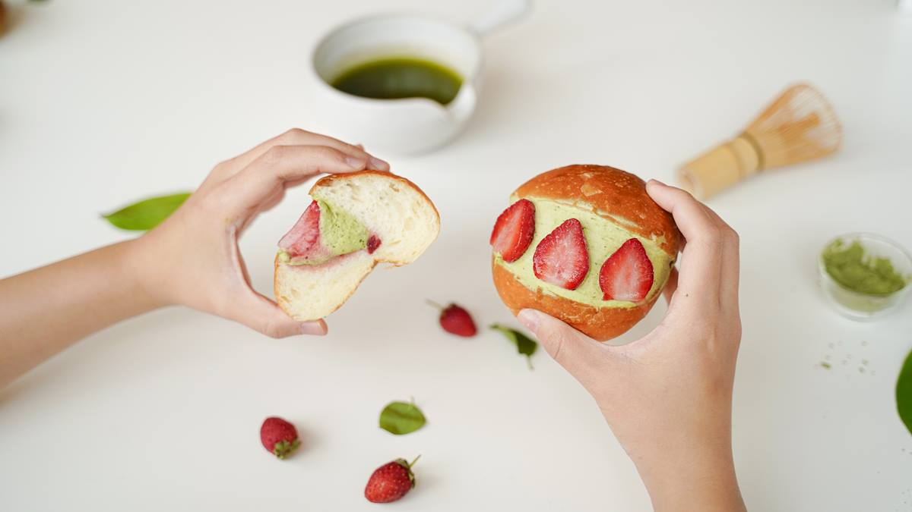
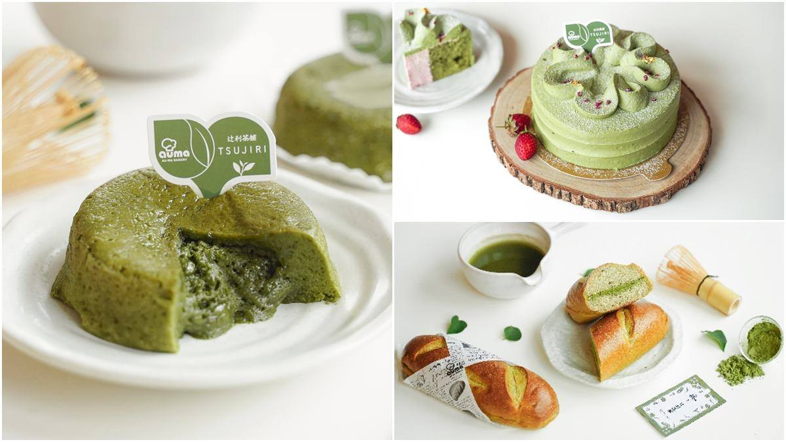

首頁
鈺 刺身丼
草莓季手搖飲
心得

奧瑪烘焙
抹茶控和甜點迷都要收！人氣團購名店「奧瑪烘焙」，這次與日本百年抹茶品牌「辻利茶舗」跨界聯名，
推出５款超療癒抹茶甜品，包括月銷萬顆的「抹茶雙餡生乳包」、季節限定的草莓抹茶生乳包，以及會爆漿的流心半熟蛋糕，
現在於食尚玩家還有獨家開賣組合，讓民眾在家就能吃到超狂新品！

濃抹茶雙餡生乳包
高雄在地手作職人「奧瑪烘焙」，陸續推出多款超人氣團購美食，像是爆漿餐包、奶蓋蛋糕、髒髒包，以及每日秒殺完售的「羅馬生乳包」；
這次更跨界聯名，與日本百年抹茶品牌「辻利茶舗」推出一系列全新甜品，首推經典款「羅馬生乳包－辻利濃抹茶雙餡」，
以低溫、長時間發酵的生吐司麵團，結合清新抹茶生乳餡和濃郁抹茶卡士達醬，每一口都吃得到醇厚抹茶香與Q彈的麵包口感，讓人一吃就上癮！

抹茶草莓雙餡生乳包
另外還有季節限定「羅馬生乳包－辻利抹茶草莓雙餡」，以濃郁抹茶生乳內餡，搭配酸甜草莓卡士達醬，
最後再塞入新鮮大湖草莓點綴，一入口茶香撲鼻，尾韻的酸甜莓果香，讓生乳包吃來更加清爽不膩口。

辻利系列
除了２款抹茶口味生乳包外，還推出３款抹茶甜點，像是「維也納軟法－辻利冰心抹茶」，
麵包體使用日本頂級麵粉和辻利抹茶粉去烘焙，內餡則以法國鮮奶油和抹茶粉製成，整體口感甜而不膩；
「流心半熟蛋糕－辻利抹茶白巧」以白巧克力為基底，再混入高比例抹茶粉，常溫吃有著鬆軟半熟口感，加熱後則會有半熟內餡流出超療癒；
而「日式崎風蛋糕－辻利抹茶草莓生乳」嚴選法國鮮奶油與抹茶粉製作而成，表面還會擠上抹茶擠花、草莓乾點綴，絕對是好吃又好拍的甜點！